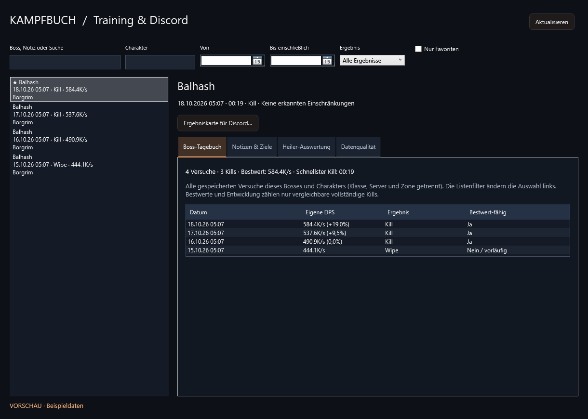
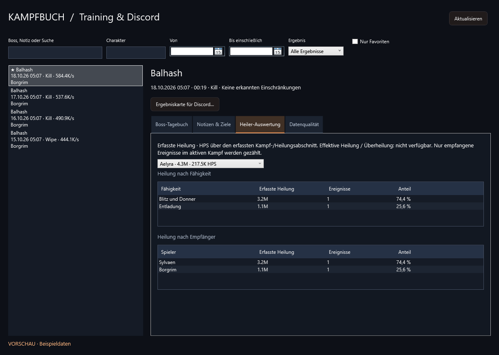
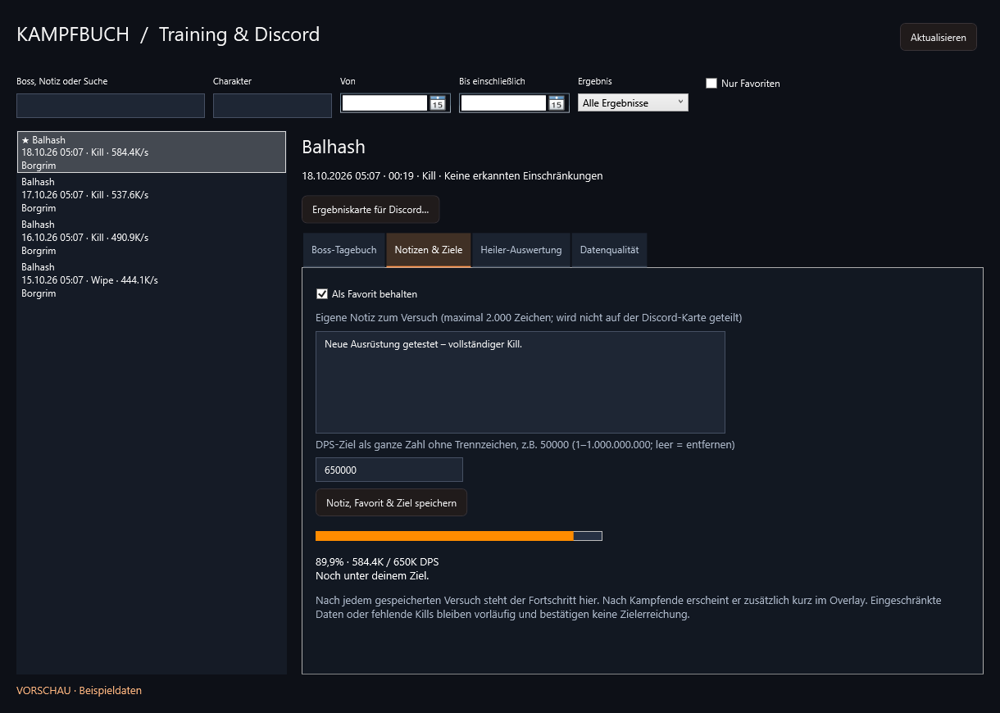

Deine Kämpfe. Dein Fortschritt. Deine Ergebniskarte.
Alle sechs angekündigten Funktionen sind im neuen Kampfbuch & Training verfügbar. Öffnen über Verlauf → Kampfbuch & Training oder Komfort & Analyse → Kampfanalyse. Die neue Oberfläche ist zunächst deutsch.




Boss-Tagebuch
Versuche, Kills, persönliche DPS-Bestwerte, schnellste bestätigte Kills und Entwicklung pro Boss, Charakter, Klasse, Server und Zone. Eigene Notizen helfen beim Einordnen von Ausrüstung und Training.
Heiler-Auswertung
Erfasste Heilung nach Heiler, Fähigkeit und Empfänger mit Mengen, Ereignissen, Anteilen und HPS. Reine Heiler werden separat erfasst und erhalten keine künstlichen DPS-Plätze. Effektive Heilung und Überheilung werden mangels verlässlicher Daten nicht geschätzt.
Persönliche Trainingsziele
Setze z.B. 50000 DPS als Boss-Ziel. Der gespeicherte Versuch zeigt deinen Fortschritt, nach Kampfende auch kurz im Overlay. Eine Zielerreichung wird nur durch einen vergleichbaren vollständigen Kill bestätigt.
Ergebniskarten für Discord
Boss, Kampfdauer, Rangliste, Schaden und DPS als gestaltete PNGs mit Vorschau speichern. Namen sind standardmäßig anonymisiert; im Streamer-Modus ist das verpflichtend. Große Gruppen werden vollständig auf mehrere Karten verteilt. Kein automatischer Upload und kein Spielchat-Versand.
Verlauf suchen und markieren
Filtere nach Boss oder Notiz, Datum einschließlich Enddatum, Charakter, Ergebnis und Favoriten. Notizen, Favoriten und Ziele liegen lokal in einer separaten Metadatendatei; die Originalkämpfe werden dafür nicht umgeschrieben.
Datenqualität am Kampf
Hinweise erklären spätes Einsteigen, fehlenden Gruppenschaden, unbekannte maximale Boss-HP, unzugeordnete Beschwörungen und begrenzte Heilungsdetails. Ohne bestätigte Startreferenz wird keine vollständige Erfassung behauptet.
Geprüft vor dem Release
Automatisierte Tests prüfen unter anderem Heilungs-Erfassung, Notizen und Favoriten, atomare Speicherung, Datenqualität, Suchfilter, Ziele und echte WPF-/PNG-Ausgaben. Der Release-Workflow führt die Core- und App-Tests erneut aus, bevor Installer und ZIP erstellt werden.